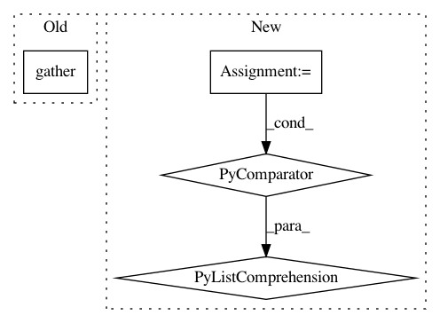

b95fcf7f52aca8ad0b1afb3cfc64c8eed534fafe,tests/keras/backend/backend_test.py,TestBackend,test_gather,#TestBackend#,331
Before Change
inds = [1, 3, 7, 9]
inds_th = KTH.variable(inds, dtype="int32")
inds_tf = KTF.variable(inds, dtype="int32")
th_z = KTH.gather(ref_th, inds_th)
th_result = KTH.eval(th_z)
tf_result = KTF.eval(KTF.gather(ref_tf, inds_tf))
assert_allclose(tf_result, th_result, atol=1e-05)
After Change
shape = (10, 2, 3)
ref = np.arange(np.prod(shape)).reshape(shape)
inds = [1, 3, 7, 9]
z_list = [k.eval(k.gather(k.variable(ref), k.variable(inds, dtype="int32")))
for k in BACKENDS]
assert_list_pairwise(z_list)
assert_list_keras_shape(z_list)
In pattern: SUPERPATTERN
Frequency: 3
Non-data size: 4
Instances
Project Name: keras-team/keras
Commit Name: b95fcf7f52aca8ad0b1afb3cfc64c8eed534fafe
Time: 2017-07-29
Author: me@taehoonlee.com
File Name: tests/keras/backend/backend_test.py
Class Name: TestBackend
Method Name: test_gather
Project Name: GPflow/GPflow
Commit Name: a1d15164eceb07b8c98e95df75e540467524a384
Time: 2018-01-04
Author: james@prowler.io
File Name: gpflow/likelihoods.py
Class Name: SwitchedLikelihood
Method Name: _partition_and_stitch
Project Name: Microsoft/nni
Commit Name: 55b557f17385ca10b8a3e8fb8bbb0d3799906db5
Time: 2019-11-20
Author: 38930155+chicm-ms@users.noreply.github.com
File Name: src/sdk/pynni/nni/compression/tensorflow/builtin_pruners.py
Class Name: FPGMPruner
Method Name: _get_min_gm_kernel_idx